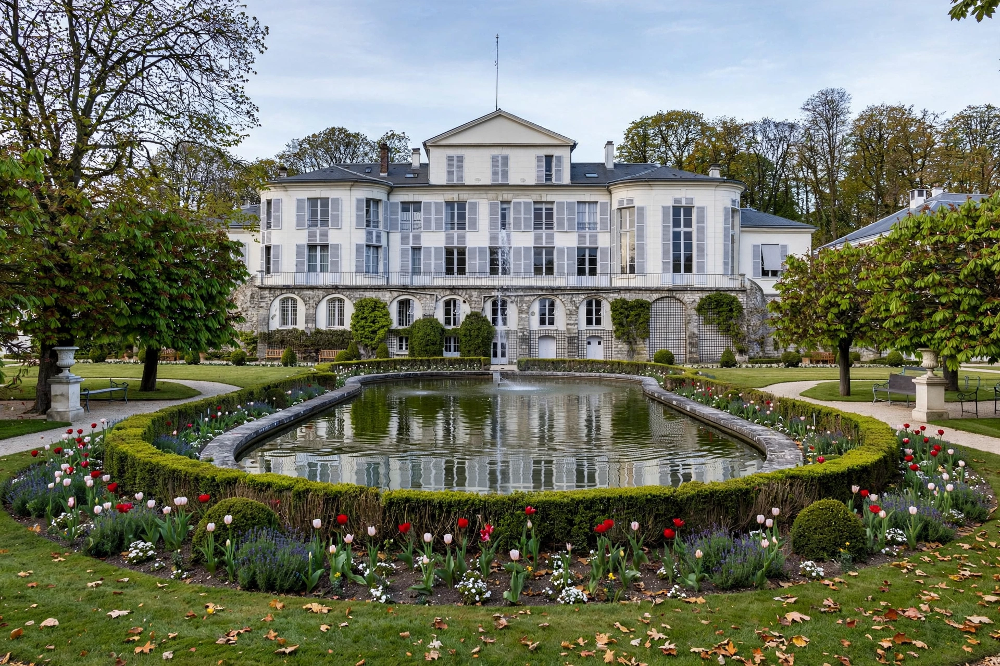

The Metre Convention (French: Convention du Mètre), also known as the Treaty of the Metre, is an international treaty that was signed in Paris on 20 May 1875 by representatives of 17 states. The treaty created the International Bureau of Weights and Measures (BIPM), an intergovernmental organisation under the authority of the General Conference on Weights and Measures (CGPM) and the supervision of the International Committee for Weights and Measures (CIPM).

| Metre Convention | |
|---|---|
| Signed | 20 May 1875 |
| Location | Paris, France |
| Original signatories | 17 states |
| Created | BIPM, CGPM, CIPM |
| Commemorated by | World Metrology Day (20 May) |
By the 1870s, the spread of the metric system and the needs of geodesy, industry and science made an international measurement authority desirable. A diplomatic conference in Paris in 1875 produced the Convention, initially designed to maintain the international prototypes of the metre and kilogram. The BIPM was housed in the Pavillon de Breteuil at Sèvres, granted extraterritorial status by France.
The Convention was amended in 1921 to extend the BIPM's scope to electrical and photometric units and, later, temperature and time. Membership grew from 17 signatories to more than 60 member states. The CGPM, meeting roughly every four years, approves changes to the SI, including the 1960 adoption of the system and the 2019 redefinition of the SI base units in terms of physical constants.
Member states contribute to the BIPM budget according to a scale related to population and hold voting rights in the CGPM. A second tier of associates may participate in the CIPM Mutual Recognition Arrangement without voting rights.
See also: International System of Units · General Conference on Weights and Measures